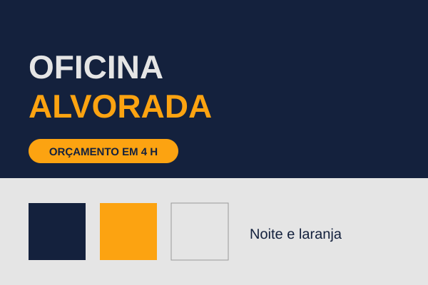
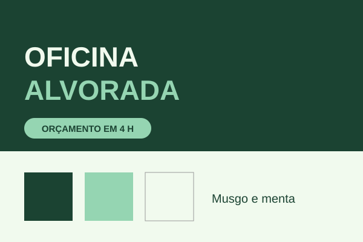
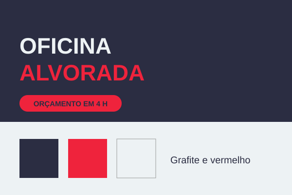
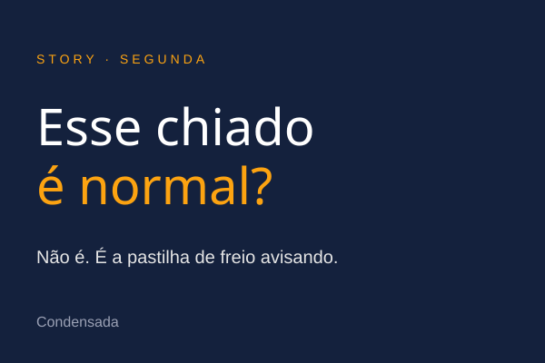
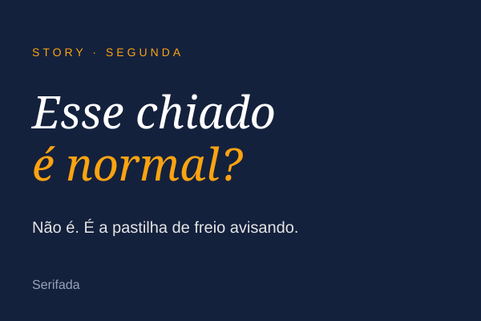
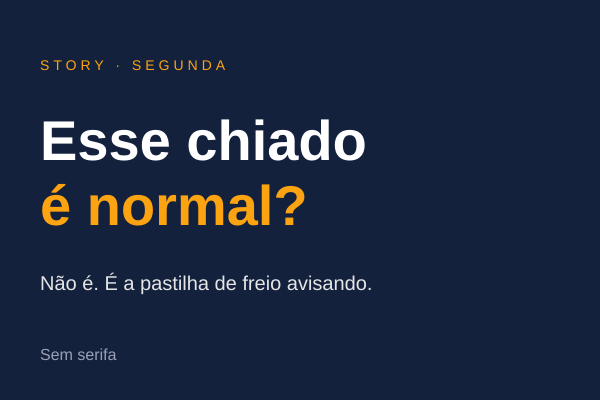

MODELO 9 · Prancha de escolha · amostra
Quando usar: degrau 5 do desenho de produto, kit de marca, direção de arte. · Conta de exemplo: Oficina Alvorada. Uma variável por linha, de 2 a 4 opções; a recomendação vai na mensagem, não na prancha.
1 Escolha a paleta



2 Escolha a letra do título


